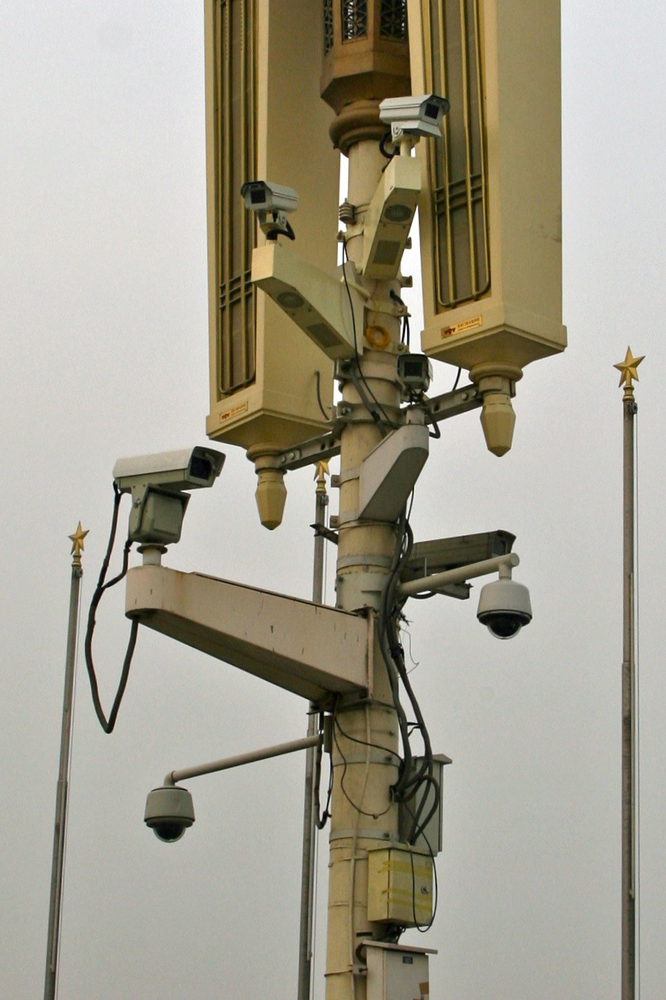

Report: China's diaspora-control network reaches deep into Europe
Madrid-based Safeguard Defenders says the Chinese Communist Party monitors its diaspora through 1,247 'liaison points' in at least 91 countries, hundreds of them in Europe; the network has 'persuaded' about 230,000 people to return to China.

According to a new report by the Madrid-based human-rights group Safeguard Defenders, China has expanded rather than reduced its network for monitoring the diaspora abroad. The report says at least 1,247 CCP 'liaison points' were identified in more than 91 countries, hundreds of them in Europe — across roughly two dozen countries.
How the network works
According to the report, Chinese authorities formally designate existing community structures — hometown associations, chambers of commerce and cultural groups — as 'liaison points' under the United Front Work Department. Through them, police, prosecutors and courts can operate abroad.
Pressure and 'return'
The report says the network has 'persuaded' about 230,000 people to return to China, often through pressure on relatives still in the country. The organisation describes these outposts as acting as 'Chinese Communist Party operatives for community surveillance and enforcement abroad.'

The 'closed' outposts
After 102 unauthorised 'overseas police stations' in 53 countries were exposed in 2022, several governments announced they had been closed. Safeguard Defenders says the underlying network remained and expanded, with only a change of branding masking continued operations; since late 2024, five new national policies have ordered this activity to expand abroad. The report was presented in The Hague at a conference of the Inter-Parliamentary Alliance on China (IPAC — 52 lawmakers from 30 countries).